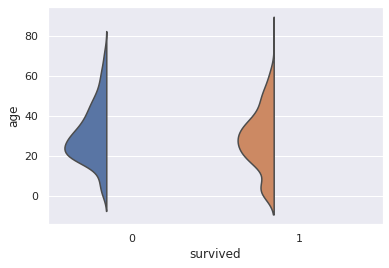

Raincloud plotとは、散布図、片側バイオリン図、箱ひげ図の3つのグラフにて構成されたグラフのことです。
それぞれのグラフの配置の様子から、各グラフを雲や雨、傘と表現します。 グループ間の平均値を結ぶ線を描くこともあり、これは雷と表現します。
箱ひげ図は、中央値(第2四分位数)、第1四分位数、第3四分位数、最大値、最小値を記載したグラフです。 その他に平均や外れ値を記載することがあります。
箱ひげ図でもデータの主だった特徴を捉えることができますが、山がふたつ以上あるデータだとうまく捉えることができません。
バイオリン図は箱ひげ図にカーネル密度グラフを付加したグラフです。
バイオリンの形と表されるカーネル密度グラフにより、山が複数あるグラフでもどのような偏りがあるかを捉えることができます。 箱ひげ図が真ん中にあるので、箱ひげ図の情報よりも多くの情報を得られます。
ただし、カーネル密度により滑らかに描画するので、値がない箇所においても値があるかのように表示されてしまいます。 バンド幅の設定によって見え方も変わります。 また同じカーネル密度グラフが左右2つあるので、情報が余計です（個人的主観）。
散布図は、平均や中央値はわかりませんが、値のばらつき度合いが分かります。 特に外れ値や値のない谷間の箇所がどこかを知るのに役立ちます。
箱ひげ図、バイオリン図、散布図、それぞれデータの特徴を捉えることができますが、それひとつだけでは捉えきれない特徴があります。
Raincloud plotでは、余計な片方のカーネル密度グラフを削除、箱ひげ図を離して見やすくしています。 また、散布図の付加で外れ値の情報も得られ、値がない谷間の箇所も分かります。
Raincloud plotは、それぞれのグラフの長所と短所をうまく混ぜて、ひとつにまとめたグラフです。 中央値(第2四分位数)、第1四分位数、第3四分位数、最大値、最小値、値のばらつき、まとまり具合、外れ値がわかり、多くの情報をひと目で知ることができるグラフになります。
PythonにおけるRaincloud plotの出力方法をご紹介します。
ライブラリはpog87/PtitPrinceを用います。
まず、pipまたはcondaにてptitprinceをインストールします。
pip install ptitprince
conda install -c conda-forge ptitprince
あるいは、pog87/PtitPrinceより、git cloneして下記を実行しインストールします。
python setup.py install
import ptitprince as pt
import pandas as pd
import seaborn as sns
import matplotlib.pyplot as plt
データはタイタニックを使ってみます。
titanic = sns.load_dataset('titanic')
ptitprinceは可視化ライブラリSeabornをベースにしていますので、Seabornでスタイルの調整などができます。
sns.set()
data
yxdataにデータセットを指定し、yに変数を指定します。
二変数で並べて表示する場合は、xに別の変数を指定します。
plt.figure(figsize=(12, 4))
plt.subplot(1,2,1)
plt.title("horizontal")
pt.RainCloud(data=titanic, y="age", orient="h")
plt.subplot(1,2,2)
pt.RainCloud(data=titanic, x="survived", y="age", orient="h")
plt.tight_layout()

平均値を結ぶ線、Thunderは、デフォルトでは表示されておらず、pointplot=Trueで表示されます。
pt.RainCloud(data=titanic, x="survived", y="age", orient="h", pointplot=True)
orient="h"
orient="v"
グラフの向きは垂直がデフォルトになっています。
plt.figure(figsize=(12, 4))
plt.subplot(1,2,1)
plt.title("horizontal")
pt.RainCloud(data=titanic, x="survived", y="age", orient="h")
plt.subplot(1,2,2)
plt.title("vertical")
pt.RainCloud(data=titanic, x="survived", y="age", orient="v")
plt.tight_layout()

片側バイオリンと散布図に使われている色は、paletteにて変更することができます。
カラーパレットは、Seabornにて使われているカラーパレットを利用できます。
palette: カラーパレットの指定 (デフォルト: Set2)plt.figure(figsize=(12,8))
plt.subplot(2,2,1)
plt.title("Blues")
pt.RainCloud(data=titanic, x="class", y="age", orient="h", box_sym='', palette='Blues')
plt.subplot(2,2,2)
plt.title("tab10")
pt.RainCloud(data=titanic, x="class", y="age", orient="h", box_sym='', palette='tab10')
plt.subplot(2,2,3)
plt.title("Set1")
pt.RainCloud(data=titanic, x="class", y="age", orient="h", box_sym='', palette='Set1')
plt.subplot(2,2,4)
plt.title("colorblind")
pt.RainCloud(data=titanic, x="class", y="age", orient="h", box_sym='', palette='colorblind')
plt.tight_layout()
order: xに設定したカテゴリ変数の順序を指定xに指定した変数の順序をorderにて変更することができます。
デフォルトで順序は値の昇順になります。
plt.figure(figsize=(12, 4))
plt.subplot(1,2,1)
pt.RainCloud(data=titanic, x="class", y="age", orient="h")
plt.subplot(1,2,2)
plt.title("vertical")
pt.RainCloud(data=titanic, x="class", y="age", orient="h", order=['Second', 'Third', 'First'])
plt.tight_layout()

Cloud、片側バイオリンの幅や位置などの調整方法です。
width_viol: cloudの幅 (デフォルト=.7)bw: バンド幅 (デフォルト=.2)linewidth: cloudの線幅 (デフォルト=1)plt.figure(figsize=(12, 8))
plt.subplot(2,2,1)
plt.title("default")
pt.RainCloud(data=titanic, x="survived", y="age", orient="v")
plt.subplot(2,2,2)
plt.title("width_viol=.5")
pt.RainCloud(data=titanic, x="survived", y="age", orient="v", width_viol=.5)
plt.subplot(2,2,3)
plt.title("width_viol=.5, bw=.1")
pt.RainCloud(data=titanic, x="survived", y="age", orient="v", width_viol=.5, bw=.1)
plt.subplot(2,2,4)
plt.title("width_viol=.3, bw=.5, linewidth=5")
pt.RainCloud(data=titanic, x="survived", y="age", orient="v", width_viol=.3, bw=.5, linewidth=5)
plt.tight_layout()

デフォルトですと、バイオリンの高さが高すぎて飛び出たり重なったりすることもあるので、width_violにて高さを調整します。
offset: cloudの位置調整 (デフォルト: max(width_box/1.8, .15) + .05)plt.figure(figsize=(6, 4))
plt.subplot(1,2,1)
plt.title("default")
pt.RainCloud(data=sample, y="age", orient="v", width_viol=.3)
plt.subplot(1,2,2)
plt.title("offset=.12")
pt.RainCloud(data=sample, y="age", orient="v", width_viol=.3, offset=.12)
plt.tight_layout()
Cloudの位置が離れすぎていると感じたら、offsetを指定することで、調整することができます。
少しの値でけっこうずれるので、ちょっと調整は大変ですが...
Rain、散布図の大きさや色などの調整方法です。
point_size: 点の大きさ (デフォルト=3)jitter: 点のばらつき (デフォルト=1)
rain_edgecolor: 輪郭線の色rain_linewidth: 輪郭線の幅rain_alpha: 点の透過度plt.figure(figsize=(12, 8))
plt.subplot(2,2,1)
plt.title("default")
pt.RainCloud(data=titanic, x="survived", y="age", orient="h")
plt.subplot(2,2,2)
plt.title("point_size=2, jitter=2\nrain_alpha=.3")
pt.RainCloud(data=titanic, x="survived", y="age", orient="h", point_size=5, jitter=.02, rain_alpha=.3)
plt.subplot(2,2,3)
plt.title("point_size=10, jitter=.2\nrain_edgecolor='white', rain_linewidth=1, rain_alpha=.5")
pt.RainCloud(data=titanic, x="survived", y="age", orient="h", point_size=10, jitter=.2, rain_edgecolor='white', rain_linewidth=3, rain_alpha=.5)
plt.subplot(2,2,4)
plt.title(" point_size=5\nrain_edgecolor='gray', rain_linewidth=3, rain_alpha=.3")
pt.RainCloud(data=titanic, x="survived", y="age", orient="h", point_size=5, rain_edgecolor='gray', rain_linewidth=1, rain_alpha=.3)
plt.tight_layout()
jitterのばらつきは大きくしすぎると、Cloudと重なったりします。
ばらつきを小さくすれば、直線になっていきます。
ばらつきを小さくした場合は、点が重なりやすくなります。
rain_alphaで透過度を設定すると、色の濃い部分に値が多い箇所だと分かりやすくなります。
move: rainの位置調整 (デフォルト: 0)散布図はデフォルトで箱ひげ図と重なっていますが、移動して重ならないようにすることもできます。
pt.RainCloud(data=titanic, x="survived", y="age", orient="h", move=.2)

jitter(点のばらつき)や箱ひげ図の大きさがデフォルトのときは、move=.2あたりがギリギリ重ならなくなる値です。
(傘が雨の上にあるのはおかしいとか言ってはいけない)
Umbrella、箱ひげ図の幅の調整方法です。
width_box: 箱ひげ図の幅 (デフォルト: .15)box_linewidth: 箱ひげ図の線の幅 (デフォルト: 1)box_sym: 箱ひげ図の外れ値のマーカーplt.figure(figsize=(12,8))
plt.subplot(2,2,1)
plt.title("default")
pt.RainCloud(data=titanic, x="survived", y="age", orient="h")
plt.subplot(2,2,2)
plt.title("width_box=0.3")
pt.RainCloud(data=titanic, x="survived", y="age", orient="h", width_box=0.3)
plt.subplot(2,2,3)
plt.title("box_linewidth=3")
pt.RainCloud(data=titanic, x="survived", y="age", orient="h", box_linewidth=5)
plt.subplot(2,2,4)
plt.title("box_edgecolor='gray', box_sym=''")
pt.RainCloud(data=titanic, x="survived", y="age", orient="h", box_sym='')
plt.tight_layout()

箱ひげ図における外れ値はデフォルトで表示されていますが、散布図においても同じ値が表示されます。
同じ値が表示されていまうので、箱ひげ図の外れ値を表示したくない場合は、box_sym=''を指定することで非表示にできます。
なお、箱ひげ図は、後述するグラフの重ね(hue)をしない場合は塗りつぶしはありません。
また、箱ひげ図の線の色は黒色固定のため、残念ながら変更できません。
pointplot=Trueにすることで、各グループの平均値を結ぶ線、Thunderを出力することができます。
pointplot: 平均値を結ぶ線の表示有無 (デフォルト: false)linecolor: 線の色 (デフォルト: red)point_linestyles: 線のスタイル (デフォルト: -)point_markers: 平均値のマーカー (デフォルト: o)point_scale: 平均値のマーカーと線のスケール (デフォルト: 1)plt.figure(figsize=(12,12))
plt.subplot(3,2,1)
plt.title("default")
pt.RainCloud(data=titanic, x="class", y="age", orient="h", box_sym='', pointplot=True)
plt.subplot(3,2,2)
plt.title("linecolor='blue'")
pt.RainCloud(data=titanic, x="class", y="age", orient="h", box_sym='', pointplot=True, linecolor='blue')
plt.subplot(3,2,3)
plt.title("point_linestyles='--'")
pt.RainCloud(data=titanic, x="class", y="age", orient="h", box_sym='', pointplot=True, point_linestyles='--')
plt.subplot(3,2,4)
plt.title("point_linestyles=':'")
pt.RainCloud(data=titanic, x="class", y="age", orient="h", box_sym='', pointplot=True, point_linestyles=':')
plt.subplot(3,2,5)
plt.title("point_scale=0.7")
pt.RainCloud(data=titanic, x="class", y="age", orient="h", box_sym='', pointplot=True, point_scale=0.7)
plt.subplot(3,2,6)
plt.title("point_markers='*', point_scale=3")
pt.RainCloud(data=titanic, x="class", y="age", orient="h", box_sym='',pointplot=True, point_markers='*', point_scale=3)
plt.tight_layout()
xとyとは別にhueに変数を設定すると、その変数でグラフを重ねて表示することができます。
hue: グラフを重ねたい変数を指定dodge: 重なった箱ひげ図をずらす (デフォルト: false)alpha: グラフの透明度 (デフォルト: None)move: rainの位置調整 (デフォルト: 0)plt.figure(figsize=(12,10))
plt.subplot(2,2,1)
plt.title("default")
pt.RainCloud(data=titanic, x="class", y="age", hue="survived", orient="h", box_sym='', palette='tab10')
plt.subplot(2,2,2)
plt.title("dodge=True")
pt.RainCloud(data=titanic, x="class", y="age", hue="survived", orient="h", box_sym='', palette='tab10', dodge=True)
plt.subplot(2,2,3)
plt.title("dodge=True, alpha=.7")
pt.RainCloud(data=titanic, x="class", y="age", hue="survived", orient="h", box_sym='', palette='tab10', dodge=True, alpha=.7)
plt.subplot(2,2,4)
plt.title("dodge=True, alpha=.7, move=.2")
pt.RainCloud(data=titanic, x="class", y="age", hue="survived", orient="h", box_sym='', palette='tab10', dodge=True, alpha=.7, move=.2)
plt.tight_layout()

hueのみを利用した状態ですと、箱ひげ図が塗りつぶされ、重なった状態で、後ろに隠れたグラフが見えない状態です。
また、hueのカテゴリ数が多いとき、散布図と箱ひげ図が重なっていると非常に見にくくなります。
hueを利用したときは、dodge、alpha、moveを設定したほうが見やすくなるかと思います。
グラフを重ねたときも、pointplot=Trueにて、平均値の線を結ぶことができます。
plt.figure(figsize=(12,5))
plt.subplot(1,2,1)
plt.title("pointplot=True")
pt.RainCloud(data=titanic, x="class", y="age", hue="survived", orient="h", box_sym='', palette='tab10', dodge=True, alpha=.7, pointplot=True, move = .2)
plt.subplot(1,2,2)
plt.title("3 category")
pt.RainCloud(data=titanic, x="survived", y="age", hue="class", orient="h", box_sym='', palette='tab10', dodge=True, alpha=.7, pointplot=True, move = .2)
plt.tight_layout()

hueを設定したとき、平均値を結ぶ線の色は自動でカラーパレットの色になります。
このとき、linecolorで色を設定しても変更できません（色によっては見づらい...)。
hue_order: hueに設定したカテゴリ変数の重なり順を指定plt.figure(figsize=(12,6))
plt.subplot(1,2,1)
plt.title("default")
pt.RainCloud(data=titanic, x="survived", y="age", hue="class", orient="h", box_sym='', palette='tab10', dodge=True, alpha=.7, pointplot=True, move=.2)
plt.subplot(1,2,2)
plt.title("hue_order=['Third', 'Second', 'First']")
pt.RainCloud(data=titanic, x="survived", y="age", hue="class", orient="h", box_sym='', palette='tab10', dodge=True, alpha=.7, pointplot=True, move=.2, hue_order=['Third', 'Second', 'First'])
plt.tight_layout()

xの順序をorderで変更するように、重なった片側バイオリン図はhue_orderで順序を変更することができます。
カラーパレットやhueに指定した変数のカテゴリ数にもよりますが、重なると分かりづらくなるので、重なる順序を指定して、見やすく指定できます。
カテゴリ数が大きいとさすがに順序だけでは見やすさの改善は難しいです。 この場合は、利用を諦めたほうが無難かと思います。
pt.RainCloud(data=titanic, x="survived", y="age", hue="deck", orient="h", box_sym='', palette='tab10', dodge=True, alpha=.7, pointplot=True, move=.2)
pog87/PtitPrinceですと、微妙に調整できない箇所があるので、片側バイオリン以外を自前でRaincloud plotをする方法もご紹介します。
片側バイオリンはSeabornでは出力できないので、ここだけはpog87/PtitPrinceの力を借ります。half_violinplotにて片側バイオリンを表示できます。
pt.half_violinplot(data=titanic, x="survived", y="age", width=0.5, inner=None)

以下、散布図と箱ひげ図をSeabornで重ねた例です。
plt.figure(figsize=(8, 4))
palette = 'Set2'
plt.subplot(1,2,1)
sns.stripplot(data=titanic, x="survived", y="age", zorder=0, palette=palette, size=2)
sns.boxplot(data=titanic, x="survived", y="age", boxprops={'facecolor':'none', "zorder":1}, whiskerprops={'linewidth':2, "zorder":1}, width=.15)
pt.half_violinplot(data=titanic, x="survived", y="age", inner=None, palette=palette, width=0.4, offset=.15)
plt.subplot(1,2,2)
sns.swarmplot(data=titanic, x="survived", y="age", zorder=0, palette=palette, size=2)
sns.boxplot(data=titanic, x="survived", y="age", boxprops={'facecolor':'none', "zorder":1}, whiskerprops={'linewidth':2, "zorder":1}, width=.15)
pt.half_violinplot(data=titanic, x="survived", y="age", inner=None, palette=palette, width=0.4, offset=.25)
plt.tight_layout()
散布図は、strip plotとswarm plotの二例を載せています。
strip plotは谷間は分かりやすいものの、山の部分がどのようになっているかが分かりにくいです。
swarm plotは点を積み重ねてくれるので、山の部分がどうなっているか分かりやすくなります。 Cloudは滑らかな山になるので、具体的な凹凸を知るときに役立ちます。
自前での作成の難点は、グラフのサイズや点のサイズを変更すると、片側バイオリン図と散布図がすぐ重なってしまうので、offsetやwidthでうまく調整してあげる必要があるのが難点です。
point plotを使うことで、平均値を結ぶ線、Thunderも付加できます。
plt.title("+Thunder")
palette = 'Set2'
sns.swarmplot(data=titanic, x="survived", y="age", zorder=0, palette=palette, size=2)
sns.boxplot(data=titanic, x="survived", y="age", boxprops={'facecolor':'none', "zorder":1}, whiskerprops={'linewidth':2, "zorder":1}, width=.15)
sns.pointplot(data=titanic, x="survived", y="age", zorder=2, errwidth=0, color='red')
pt.half_violinplot(data=titanic, x="survived", y="age", inner=None, palette=palette, cut=0, width=0.4, offset=.18)
本記事はPythonによるRaincloud plotのご紹介でしたが、Python以外でもRaincloud plotを出力することができます。